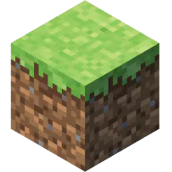
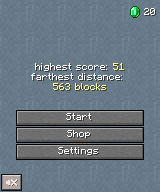
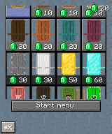
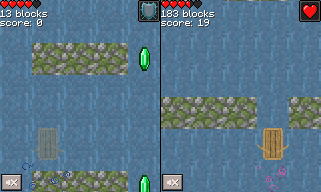
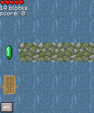
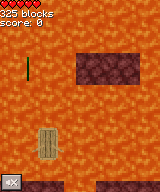
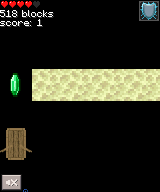

这是一个我从小学五年级开始制作的一个游戏，可以说是这些游戏中规模最大的了
游戏中所有材质以及音乐均来自Minecraft。
在游戏中，你需要控制你的船，躲避障碍，并获取更多的金币
金币可以用来在Shop中购买皮肤
当碰到障碍物时会扣血，这时船会进入无敌模式5秒，伴有蓝色粒子效果。
当碰到粉色玻璃瓶时会有22.5秒的生命恢复效果，伴有粉色粒子。
按F3键可开启调试模式，可以显示每帧运算时间
游戏中有三种地形：
1.水（0~200 blocks）
2.岩浆（200~400 blocks）
3.末路之地（400~650 blocks）
剩下的地形就由你们自己探索吧：
下载链接: 6.1 setup.exe
性能可能不太好，正在优化中...